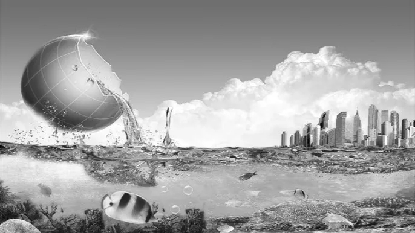

TRILHAS ECOLÓGICAS
Conheça a rica biodiversidade da mata ciliar do Rio Manso com nosso passeio guiado, ideal para amantes da natureza, fotógrafos e famílias!
O QUE INCLUI
- ✅ Guia ambiental especializado
- ✅ Binóculos e ficha de observação
- ✅ Parada em mirante com vista panorâmica
- ✅ Água, frutas e suco natural
- ✅ Duração: 3h de caminhada leve